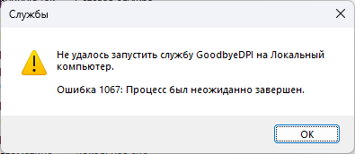

| Ник | Пост | Дата |
|---|---|---|
| Dragonman2156 | Добрый день. Проблема, Goodbyedpi работает идеально когда запускаю его как программу (через 1_russia_blacklist.cmd) В диспетчере задач можно найти эту службу, но она не работает Параметры я использую те же, что в 1_russia_blacklist.cmd Кто-то сталкивался с этим? | 2024-08-05T19:11:20.070Z |
| jestxfot(YoutubeNotWork) | У вас LTSC / сборка? | 2024-08-05T19:17:12.681Z |
| Dragonman2156 | windows 11 оригинальная | 2024-08-05T19:44:58.461Z |
| jestxfot(YoutubeNotWork) | От имени админа запускали? | 2024-08-05T19:47:53.322Z |
| jdo1313(Jdo1313) | Было такое, когда игрался с параметрами. Служба так же не запускалась. Разбираться не стал, снёс службу, удалил старую папку, распаковал новую и уже более аккуратно выставил параметры. Всё завелось | 2024-08-05T20:15:29.672Z |
| jestxfot(YoutubeNotWork) | У меня только что случился такой же баг, нужно просто удалить службу и перезапустить ещё раз | 2024-08-05T20:33:47.486Z |
| Avatar-Lion(Avatar Lion) |  Можно с этим что-то поделать? Сама прога работает, если ее отдельно в ком. строке запустить, сайты открываются и т.д. Но в виде службы отказывается стартовать категорически. Параметры запуска такие: “C:\Program Files\GoodbyeDPI\x86_64\goodbyedpi.exe” -e 1 -q --reverse-frag --wrong-seq --fake-with-sni www.google.com --dns-addr 77.88.8.8 --dns-port 1253 --dnsv6-addr 2a02:6b8::feed:0ff --dnsv6-port 1253 --blacklist “C:\Program Files\GoodbyeDPI\russia-blacklist.txt” --blacklist “C:\Program Files\GoodbyeDPI\russia-youtube.txt” | 2024-10-07T16:11:40.810Z |
| Ori |
Не пробовали из program files вытащить? Возможно там какие-то проблемы с правами доступа. | 2024-10-07T17:26:58.931Z |
| Avatar-Lion(Avatar Lion) | Нет, попробовал сейчас отдельно запустить, тоже не получилось. Как я понял, какие-то несовместимые параметры. Хотя странно, GoodCheck ведь отработал с ними… В общем, пока что взял другой набор параметров, который он выдал: -e 1 -q --reverse-frag --wrong-seq. С ними все нормально, служба установлена и запущена, Ютуб работает корректно. | 2024-10-07T18:21:36.622Z |
| KDS | В CMD создания службы Или так, если нет IPv6 Можно вообще dns-addr и port убрать и просто включить DoH в браузере | 2024-10-07T19:14:30.467Z |